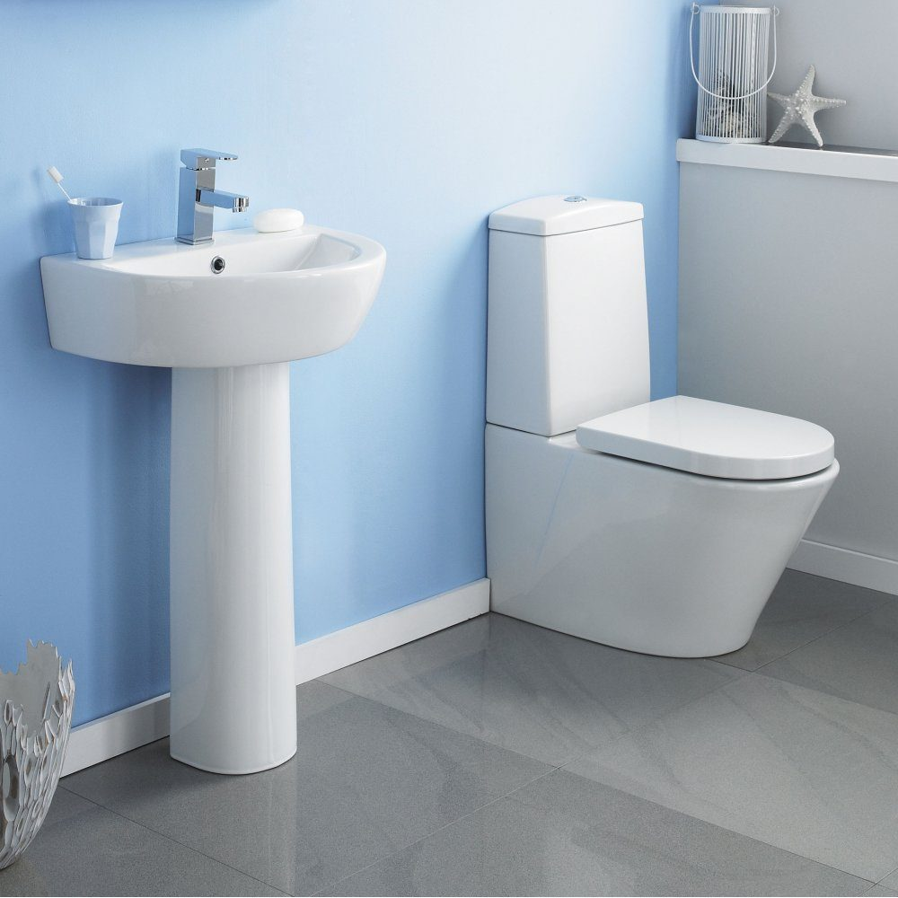
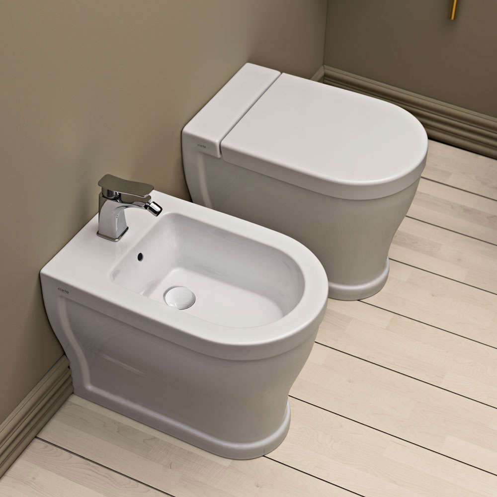
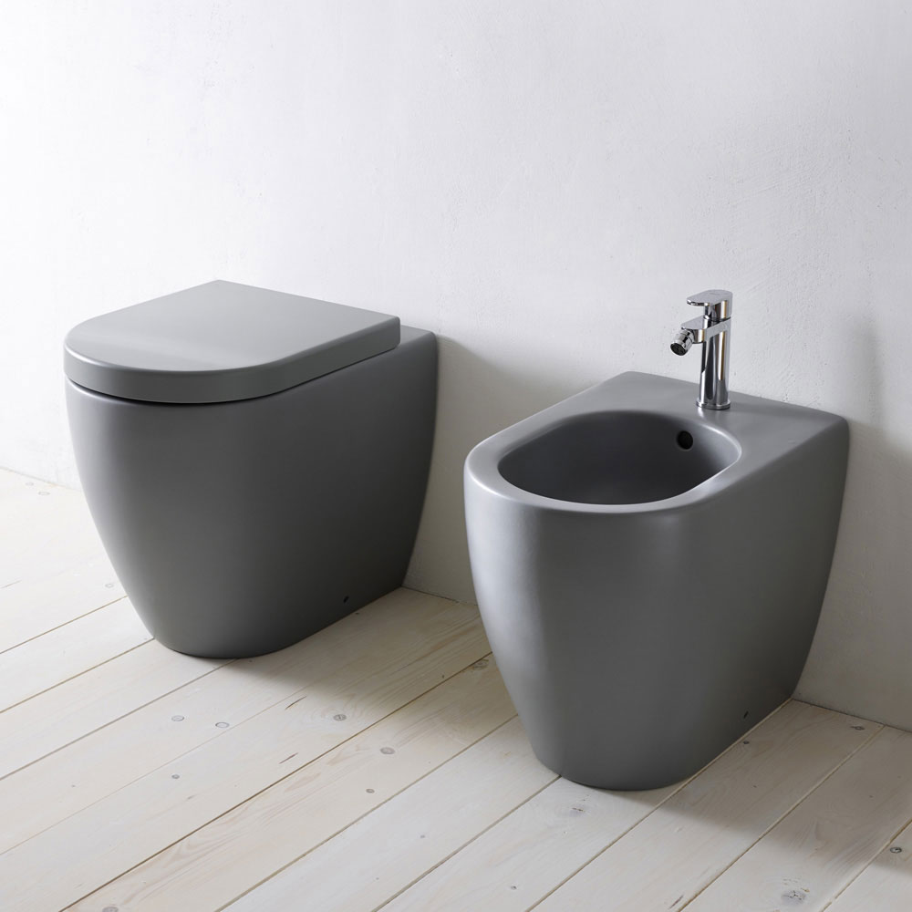

Descripcion:
365 x 680 x 710
Inodoro compacto adosado a pared con salida dual (tapa incluidos)
Referencia: A346657000

Descripcion:
360 x 500 x 550
SQUARE - Inodoro de porcelana Rimless suspendido con salida a pared
Referencia: A34630300S

Descripcion:
355 x 620 x 600
Inodoro de porcelana suspendido con salida a pared (tapa incluidos)
Referencia: A346788000